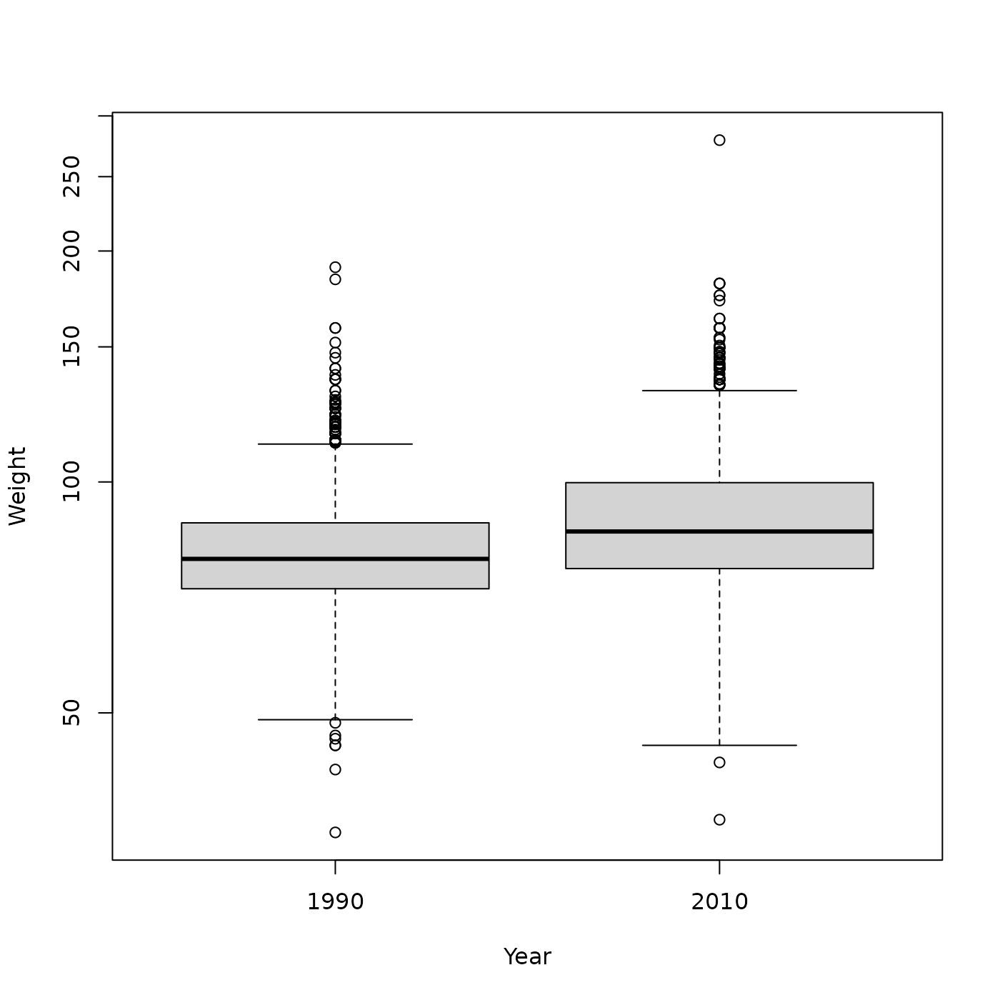

Data input
Example data: BRFSS
Download the data we will work with
url <- "https://raw.githubusercontent.com/mtmorgan/BERD/main/inst/extdata/BRFSS-subset.csv"
destination <- file.path("data", basename(url))
if (!file.exists(destination)) {
dir.create("data")
download.file(url, destination)
}Read the data into R as a tibble using the readr package.
brfss <- readr::read_csv(destination)
#> Rows: 20000 Columns: 5
#> ── Column specification ────────────────────────────────────────────────────────
#> Delimiter: ","
#> chr (1): Sex
#> dbl (4): Age, Weight, Height, Year
#>
#> ℹ Use `spec()` to retrieve the full column specification for this data.
#> ℹ Specify the column types or set `show_col_types = FALSE` to quiet this message.
brfss
#> # A tibble: 20,000 × 5
#> Age Weight Sex Height Year
#> <dbl> <dbl> <chr> <dbl> <dbl>
#> 1 31 49.0 Female 157. 1990
#> 2 57 81.6 Female 157. 1990
#> 3 43 80.3 Male 178. 1990
#> 4 72 70.3 Male 170. 1990
#> 5 31 49.9 Female 155. 1990
#> 6 58 54.4 Female 155. 1990
#> 7 45 69.9 Male 173. 1990
#> 8 37 68.0 Male 180. 1990
#> 9 33 65.8 Female 170. 1990
#> 10 75 70.8 Female 152. 1990
#> # ℹ 19,990 more rowsExplore the data using dplyr
Attach dplyr to our current R session.
Useful functions for data exploration
-
count()– count occurence of values in one or more columns -
summarize()– more flexible summary of columns -
group_by()– summarize or perform other operations by group
Functions for data manipulation
-
mutate()– update or add columns -
filter()– remove rows based on column values -
select()– remove, rearrange, or re-name columns
count()
Count of observed values for one…
brfss |>
count(Year)
#> # A tibble: 2 × 2
#> Year n
#> <dbl> <int>
#> 1 1990 10000
#> 2 2010 10000
brfss |>
count(Sex)
#> # A tibble: 2 × 2
#> Sex n
#> <chr> <int>
#> 1 Female 12039
#> 2 Male 7961…or several columns
brfss |>
count(Year, Sex)
#> # A tibble: 4 × 3
#> Year Sex n
#> <dbl> <chr> <int>
#> 1 1990 Female 5718
#> 2 1990 Male 4282
#> 3 2010 Female 6321
#> 4 2010 Male 3679
summarize()
More flexible summary, e.g., number of observations n()
or mean values of columns, removing NA,
mean(, na.rm = TRUE).
group_by()
Often data sets contain groups that can be summarized separately, e.g., calculating mean values by Year and Sex.
brfss |>
group_by(Year, Sex) |>
summarize(
n = n(),
ave_age = mean(Age, na.rm = TRUE),
ave_wt = mean(Weight, na.rm = TRUE),
ave_ht = mean(Height, na.rm = TRUE)
)
#> `summarise()` has grouped output by 'Year'. You can override using the
#> `.groups` argument.
#> # A tibble: 4 × 6
#> # Groups: Year [2]
#> Year Sex n ave_age ave_wt ave_ht
#> <dbl> <chr> <int> <dbl> <dbl> <dbl>
#> 1 1990 Female 5718 46.2 64.8 163.
#> 2 1990 Male 4282 43.9 81.2 178.
#> 3 2010 Female 6321 57.1 73.0 163.
#> 4 2010 Male 3679 56.2 88.8 178.
mutate()
Year and Sex should really be factors.
Also, add a column for log-10 transformed weight.
brfss_clean <-
brfss |>
mutate(
Year = factor(Year, levels = c("1990", "2010")),
Sex = factor(Sex, levels = c("Female", "Male")),
Log10Weight = log10(Weight)
)
brfss_clean
#> # A tibble: 20,000 × 6
#> Age Weight Sex Height Year Log10Weight
#> <dbl> <dbl> <fct> <dbl> <fct> <dbl>
#> 1 31 49.0 Female 157. 1990 1.69
#> 2 57 81.6 Female 157. 1990 1.91
#> 3 43 80.3 Male 178. 1990 1.90
#> 4 72 70.3 Male 170. 1990 1.85
#> 5 31 49.9 Female 155. 1990 1.70
#> 6 58 54.4 Female 155. 1990 1.74
#> 7 45 69.9 Male 173. 1990 1.84
#> 8 37 68.0 Male 180. 1990 1.83
#> 9 33 65.8 Female 170. 1990 1.82
#> 10 75 70.8 Female 152. 1990 1.85
#> # ℹ 19,990 more rows
filter()
Create a subset of the data that includes only Male samples, …
brfss_male <-
brfss_clean |>
filter(Sex == "Male")
brfss_male
#> # A tibble: 7,961 × 6
#> Age Weight Sex Height Year Log10Weight
#> <dbl> <dbl> <fct> <dbl> <fct> <dbl>
#> 1 43 80.3 Male 178. 1990 1.90
#> 2 72 70.3 Male 170. 1990 1.85
#> 3 45 69.9 Male 173. 1990 1.84
#> 4 37 68.0 Male 180. 1990 1.83
#> 5 56 88.5 Male 180. 1990 1.95
#> 6 74 81.6 Male 183. 1990 1.91
#> 7 19 93.0 Male 183. 1990 1.97
#> 8 35 97.5 Male 193. 1990 1.99
#> 9 60 78.0 Male 170. 1990 1.89
#> 10 29 77.1 Male 175. 1990 1.89
#> # ℹ 7,951 more rows…or only Female samples from 2010.
brfss_female_2010 <-
brfss_clean |>
filter(Sex == "Female", Year == "2010")
brfss_female_2010
#> # A tibble: 6,321 × 6
#> Age Weight Sex Height Year Log10Weight
#> <dbl> <dbl> <fct> <dbl> <fct> <dbl>
#> 1 46 45.4 Female 165 2010 1.66
#> 2 49 145. Female 183 2010 2.16
#> 3 53 54.4 Female 155 2010 1.74
#> 4 63 77.1 Female 170 2010 1.89
#> 5 53 82.1 Female 168 2010 1.91
#> 6 64 90.7 Female 163 2010 1.96
#> 7 49 77.1 Female 173 2010 1.89
#> 8 77 72.6 Female 168 2010 1.86
#> 9 70 79.4 Female 178 2010 1.90
#> 10 83 93.0 Female 157 2010 1.97
#> # ℹ 6,311 more rows
select()
Use select() to choose particular columns, or to
re-order columns
brfss_male |>
select(Year, Age, Weight, Log10Weight, Height)
#> # A tibble: 7,961 × 5
#> Year Age Weight Log10Weight Height
#> <fct> <dbl> <dbl> <dbl> <dbl>
#> 1 1990 43 80.3 1.90 178.
#> 2 1990 72 70.3 1.85 170.
#> 3 1990 45 69.9 1.84 173.
#> 4 1990 37 68.0 1.83 180.
#> 5 1990 56 88.5 1.95 180.
#> 6 1990 74 81.6 1.91 183.
#> 7 1990 19 93.0 1.97 183.
#> 8 1990 35 97.5 1.99 193.
#> 9 1990 60 78.0 1.89 170.
#> 10 1990 29 77.1 1.89 175.
#> # ℹ 7,951 more rowsInitial visualization
What is the relationship between Height and Weight in Female samples from 2010?
plot(Weight ~ Height, brfss_female_2010)With Weight on a log scale?
plot(Weight ~ Height, brfss_female_2010, log = "y")
## another way, but maybe the Y-axis scale is harder to interpret?
## plot(Log10Weight ~ Height, brfss_female_2010)Does it look like Males differ in weight between 1990 and 2010, plotted on a log scale?
brfss_male |>
group_by(Year) |>
summarize(
n = n(),
ave_wt = mean(Weight, na.rm = TRUE),
ave_log10_wt = mean(Log10Weight, na.rm = TRUE)
)
#> # A tibble: 2 × 4
#> Year n ave_wt ave_log10_wt
#> <fct> <int> <dbl> <dbl>
#> 1 1990 4282 81.2 1.90
#> 2 2010 3679 88.8 1.94
plot(Weight ~ Year, brfss_male, log = "y")
Session information
sessionInfo()
#> R version 4.3.3 (2024-02-29)
#> Platform: x86_64-pc-linux-gnu (64-bit)
#> Running under: Ubuntu 22.04.4 LTS
#>
#> Matrix products: default
#> BLAS: /usr/lib/x86_64-linux-gnu/openblas-pthread/libblas.so.3
#> LAPACK: /usr/lib/x86_64-linux-gnu/openblas-pthread/libopenblasp-r0.3.20.so; LAPACK version 3.10.0
#>
#> locale:
#> [1] LC_CTYPE=C.UTF-8 LC_NUMERIC=C LC_TIME=C.UTF-8
#> [4] LC_COLLATE=C.UTF-8 LC_MONETARY=C.UTF-8 LC_MESSAGES=C.UTF-8
#> [7] LC_PAPER=C.UTF-8 LC_NAME=C LC_ADDRESS=C
#> [10] LC_TELEPHONE=C LC_MEASUREMENT=C.UTF-8 LC_IDENTIFICATION=C
#>
#> time zone: UTC
#> tzcode source: system (glibc)
#>
#> attached base packages:
#> [1] stats graphics grDevices utils datasets methods base
#>
#> other attached packages:
#> [1] dplyr_1.1.4
#>
#> loaded via a namespace (and not attached):
#> [1] bit_4.0.5 jsonlite_1.8.8 highr_0.10 compiler_4.3.3
#> [5] crayon_1.5.2 tidyselect_1.2.1 parallel_4.3.3 jquerylib_0.1.4
#> [9] systemfonts_1.0.6 textshaping_0.3.7 yaml_2.3.8 fastmap_1.1.1
#> [13] readr_2.1.5 R6_2.5.1 generics_0.1.3 knitr_1.45
#> [17] tibble_3.2.1 desc_1.4.3 bslib_0.6.1 pillar_1.9.0
#> [21] tzdb_0.4.0 rlang_1.1.3 utf8_1.2.4 cachem_1.0.8
#> [25] xfun_0.42 fs_1.6.3 sass_0.4.9 bit64_4.0.5
#> [29] memoise_2.0.1 cli_3.6.2 withr_3.0.0 pkgdown_2.0.7
#> [33] magrittr_2.0.3 digest_0.6.35 vroom_1.6.5 hms_1.1.3
#> [37] lifecycle_1.0.4 vctrs_0.6.5 evaluate_0.23 glue_1.7.0
#> [41] ragg_1.3.0 fansi_1.0.6 rmarkdown_2.26 purrr_1.0.2
#> [45] tools_4.3.3 pkgconfig_2.0.3 htmltools_0.5.7